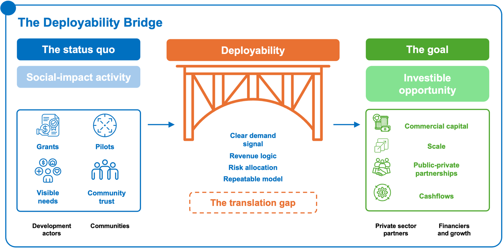
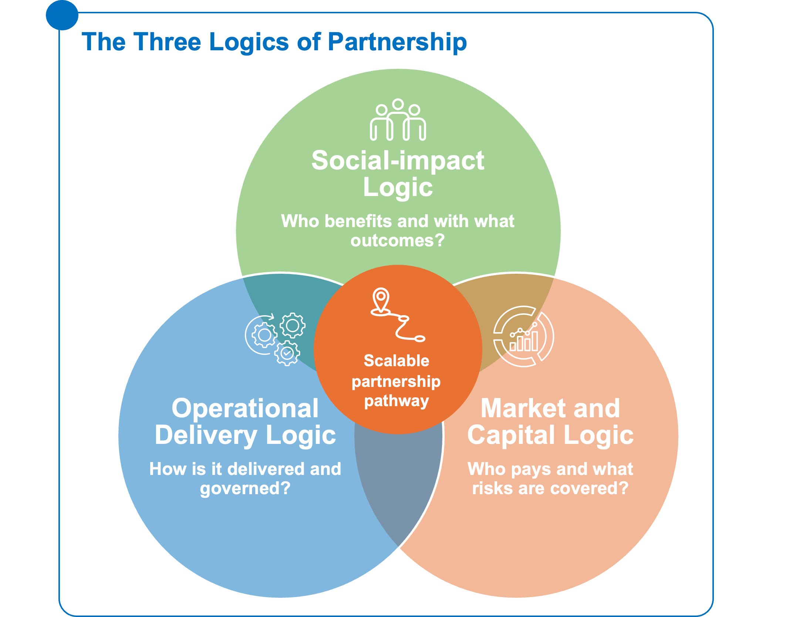
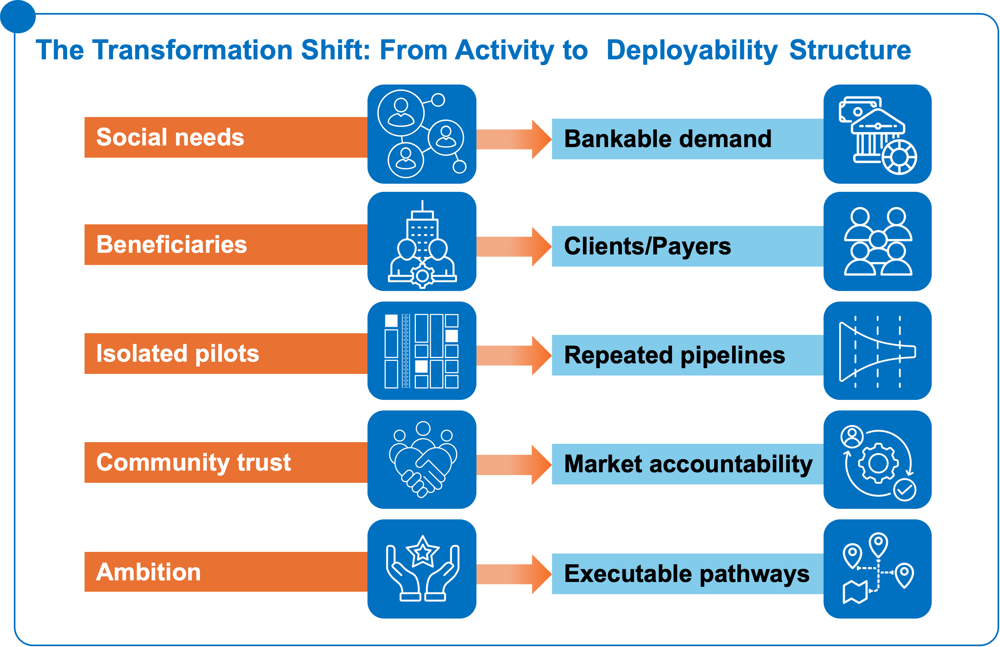

Private-sector collaboration matters because many development challenges are not only problems of need or intent; they are also problems of delivery, scale, continuity, and market structure. Where it is well structured, collaboration with private-sector actors can help extend services to more people, improve delivery efficiency, introduce innovation, strengthen supply chains, mobilize additional forms of capital, and support local enterprise growth.
It can also help create more durable markets and value chains, reduce long-term dependence on grant funding where appropriate, and improve the continuity of services beyond project cycles. This is especially relevant in sectors where development outcomes depend not only on funding, but on reliable providers, credible purchasers, functioning delivery systems, and coordinated value chains.


Figure 1: From grants and pilots to cash flows and scale - bridging the “translation gap” into investable opportunity.Figure 1: From grants and pilots to cash flows and scale - bridging the “translation gap” into investable opportunity.However, private-sector collaboration is not automatically beneficial. It should not be treated as a default solution, nor as a substitute for public responsibility, grant funding, or community-led approaches. Its value depends on whether participation improves delivery, sustainability, affordability, accountability, or wider system performance.
This is why the Playbook focuses on deployability: the practical conditions that allow private-sector participation, capital, and institutional commitment to enter a partnership opportunity with confidence.
Despite this potential, many development activities still remain framed as programs, pilots, grants, or social-impact interventions. They may produce strong development outcomes, but they do not automatically become investable or scalable partnership pathways. The missing step is translation: from impact activity to structured opportunity; from visible need to bankable demand; from program delivery to repeatable operating model; from stakeholder alignment to defined roles, risks, incentives, and payment flows.
This Playbook starts from a simple proposition: the binding constraint is often not capital scarcity, but deployability.
1.2 What is Deployability
Deployability refers to the conditions that allow capital, institutional commitment, and private-sector participation to move into a partnership opportunity with confidence. A deployable opportunity has more than impact potential. It has a clear demand signal, a credible payer or revenue logic, an operational delivery model, an appropriate allocation of risk, sufficient preparation, accountable institutions, and a pathway to replication.
This is especially important in sectors such as food and agriculture, energy, and health, where social need is high but partnership pathways are frequently under-structured. The issue is not whether these sectors matter. It is whether the opportunity has been organized in a way that allows different actors to participate sustainably.
This Playbook is therefore not another general framework on why partnerships matter. It is a practical guide for helping development actors build on existing social-impact and delivery efforts to unlock sustainable market participation, scalable partnerships, and long-term operational viability.
1.3 Who this Playbook is for and how to use it
This Playbook is written primarily for CSOs, foundations, donors, and development actors seeking to understand how their work can create the conditions for sustainable private-sector participation and scalable partnership models.
It is also intended for the wider ecosystem of actors that shape whether partnership opportunities move from concept to execution: governments, PPP units, development finance institutions, investors, banks, intermediaries, SMEs, and institutional strategy leaders.The Playbook should be read alongside the companion Executive Summary / Briefing, Toolkit, and Case Study Compendium. The Executive Summary provides the high-level strategic narrative; the Playbook develops the full framework and model logic; the Toolkit supports practical application through diagnostics, scorecards, worksheets, and templates; and the Case Study Compendium provides detailed evidence, examples, financing structures, actor roles, and lessons from implementation.
For CSOs and development actors, the Playbook helps answer questions such as:
- How can existing social-impact activities evolve into scalable partnership opportunities?
- What makes private-sector participation viable in a context where trust, affordability, infrastructure, or payment systems may be weak?
- What operational, financing, legitimacy, or coordination gaps prevent scale?
- How can community trust, delivery knowledge, and validated demand be translated into stronger partnership design?
- When should a development actor fund, convene, de-risk, aggregate, operate, monitor, or exit?
For foundations, donors, and DFIs, the Playbook offers a way to identify where catalytic support is most useful. In some cases, the constraint may be project preparation. In others, it may be demand aggregation, payment credibility, guarantee coverage, working capital, procurement readiness, community legitimacy, or enabling systems. The Playbook helps distinguish between these constraints so that grants, technical assistance, guarantees, and concessional capital are used to unlock execution rather than sustain perpetual pilot activity.
For governments and PPP units, the Playbook provides a lens for assessing whether development-led initiatives can become credible, fiscally manageable, procurement-ready, and scalable partnership pipelines. It asks whether payment commitments are realistic, whether risks are properly allocated, whether preparation is sufficient, and whether delivery systems can support implementation beyond a single project.
For investors, banks, SMEs, and intermediaries, the Playbook clarifies whether existing development activity has created the conditions for sustainable market entry. It focuses attention on practical questions: Who pays? What demand has been validated? What risks remain uncovered? Can the model be standardized? Can it be repeated? Can it generate reliable cash flows or justify blended, catalytic, or concessional finance?
For Chief Strategy Officers and strategy leaders, the Playbook is a tool for role selection. It helps institutions decide whether they should fund, convene, de-risk, aggregate, advocate, operate, build an ecosystem, or step back. This matters because many partnership efforts fail not only because the model is weak, but because institutions enter with unclear roles, mismatched incentives, or insufficient commitment to execution.
The Playbook should be used sequentially, but not rigidly.
- Parts I–III establish the thesis, shared language, and evidence base.
- Parts IV–VI diagnose why partnerships stall and what systems must be in place.
- Part VII helps users select the appropriate model and institutional role.
- Parts VIII–X present three partnership models.
- Parts XI–XII translate the models across sectors and country contexts.
- Parts XIII–XIV introduce the practical tools, companion Toolkit resources, and metrics for execution, monitoring, and learning.
- Part XV synthesizes the overall proposition.
The intended use is practical: to move from ambition to structure, and from structure to execution.
1.4 The language gap as a structuring problem
One reason development-private sector partnerships stall is that different actors often describe the same opportunity in different languages.
Development actors may speak in terms of beneficiaries, needs, impact, inclusion, theory of change, community trust, and program sustainability. Private-sector actors and financiers may ask about clients, revenue, margins, repayment, risk, return, cash flow, offtake, guarantees, and scale. Governments may focus on policy alignment, fiscal exposure, procurement, public value, accountability, and political feasibility.
These languages are not incompatible. In fact, strong partnerships often require all of them. But when they are not translated into a common operating logic, promising opportunities remain stuck between worlds.
A program may have beneficiaries but no clearly defined customer or payer. It may demonstrate social need but not bankable demand. It may generate impact but lack a revenue or reimbursement mechanism. It may have a compelling theory of change but no capital deployment pathway. It may build community trust but fail to convert that trust into adoption, payment reliability, provider performance, or long-term delivery continuity.
The language gap is therefore not a communications problem alone. It is a structuring problem.
If an opportunity cannot explain who benefits, who pays, who delivers, who bears which risks, what makes the model sustainable, and how it can be repeated, it will struggle to attract durable private-sector participation. It may still be valuable. It may still deserve grant funding. But it will not yet be structured as a scalable partnership pathway.

Figure 2: Align the three logics – impact, delivery, and capital - to unlock a scalable partnership pathway.Figure 2: Align the three logics – impact, delivery, and capital - to unlock a scalable partnership pathway.This Playbook acts as a translation tool between three logics:
- Social-impact logicWhat problem is being solved, for whom, with what intended outcomes?
- Operational delivery logicHow is the service, product, infrastructure, or intervention delivered, verified, governed, and maintained?
- Market and capital logic Who pays, what risks are covered, what cash flows exist, what capital is required, and what makes the opportunity repeatable?
The aim is not to force every development activity into a commercial model. Some activities will remain appropriately grant-funded or publicly financed. The aim is to identify where social-impact activity has created conditions that can support sustainable market participation, and where additional structuring is needed before private-sector capital, capability, or delivery capacity can enter credibly.
1.5 From social impact to investable opportunity
Existing social-impact and development activities can create real value for partnership formation. They can reveal demand, reduce information gaps, build community trust, test delivery models, identify capable local actors, strengthen accountability, and surface risks before capital is committed.
These are not peripheral contributions. They are often the foundation of investability.
In difficult markets, private-sector participation rarely begins with a fully formed commercial opportunity. It often begins with fragmented evidence: a community that trusts a delivery partner; a set of users whose needs and behaviors are understood; a pilot that shows adoption; a donor-funded program that reveals willingness to pay or ability to pay through a third party; a local SME network that could scale if working capital and standards were in place; or a public purchaser that could become credible if payment and verification systems were strengthened.
The task is to convert this evidence into a structured pathway.
That requires asking a set of translation questions early, not after a partnership has already been designed:
Who benefits?
The first question is not only who needs the intervention, but who uses it, values it, depends on it, or gains from its continued delivery. Beneficiaries may be individuals, households, patients, farmers, schools, clinics, SMEs, public agencies, or communities. Understanding who benefits helps define the social case for partnership, but it does not yet define the commercial or operational model.

Who pays?
Figure 3: Shift from activity to deployability: turning needs, pilots, and trust into bankable demand, repeatable pipelines, and executable pathways.Figure 3: Shift from activity to deployability: turning needs, pilots, and trust into bankable demand, repeatable pipelines, and executable pathways.A partnership pathway must identify the payer, purchaser, reimbursor, offtaker, or revenue source. The person who benefits may not be the person who pays. Payment may come from users, governments, insurers, buyers, utilities, donors, blended-finance vehicles, aggregators, or anchor institutions. Without a credible payment logic, demand remains visible but not bankable.
What risk blocks capital?
Capital is often available in principle but not deployable in practice because specific risks remain unresolved. These may include demand risk, payment risk, political risk, currency risk, procurement risk, construction risk, performance risk, community acceptance risk, or data reliability risk. Different risks require different instruments: preparation funding, guarantees, first-loss capital, working capital, standard contracts, verification systems, or stronger accountability mechanisms.
What makes the model operationally and commercially sustainable?
A partnership must be able to function beyond initial grant support or pilot funding. This means testing whether the operating model has reliable delivery capacity, clear standards, sufficient margins or cost recovery, credible governance, accountable actors, and a realistic pathway to institutional ownership. Sustainability is not only financial; it is operational, political, social, and institutional.
How does the model repeat?
Scale depends on repeatability. A partnership that works once because of exceptional relationships, bespoke donor support, or unusually favorable conditions may not be scalable. Repeatability requires standardization, templates, data, performance benchmarks, replicable contracts, clear roles, and a model that can be adapted across locations or cohorts without being redesigned from scratch each time.
Taken together, these questions help convert social-impact activity into partnership architecture. They do not remove complexity, but they make it visible and manageable.
The Playbook’s practical value lies in helping users move from:
- need to demand;
- beneficiaries to clients, users, purchasers, or payers;
- pilots to pipelines;
- activities to operating models;
- trust to adoption and accountability;
- grants to catalytic capital or risk mitigation;
- ambition to executable partnership pathways.
This is the shift required for partnerships to become investable, scalable, repeatable, and legitimate.